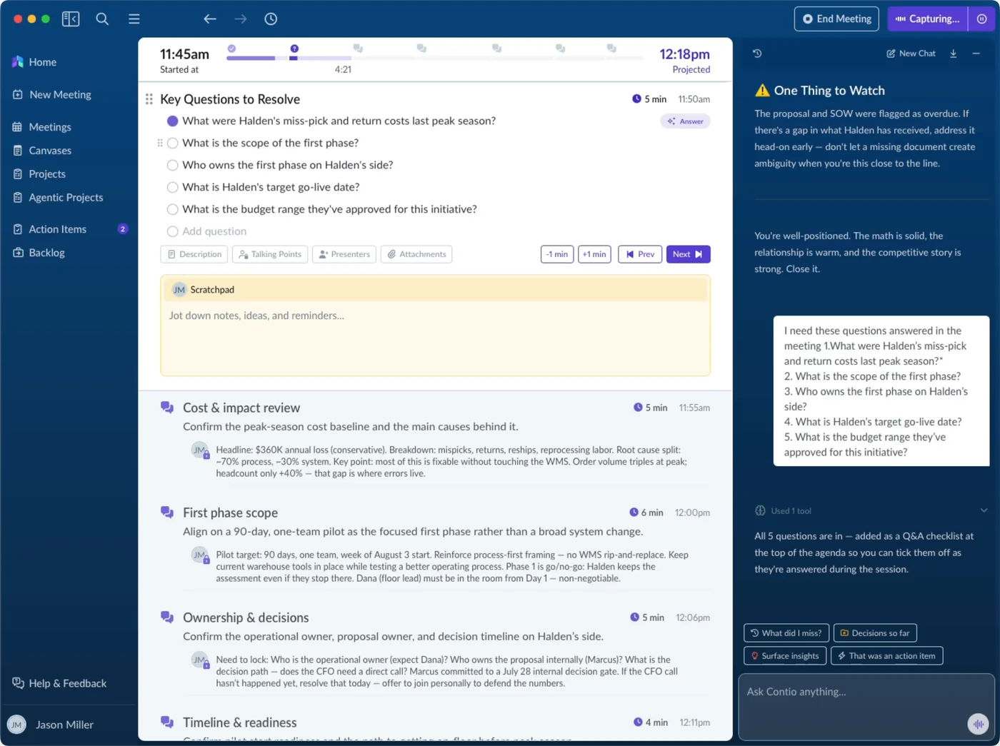
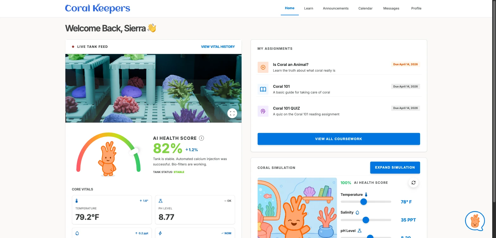
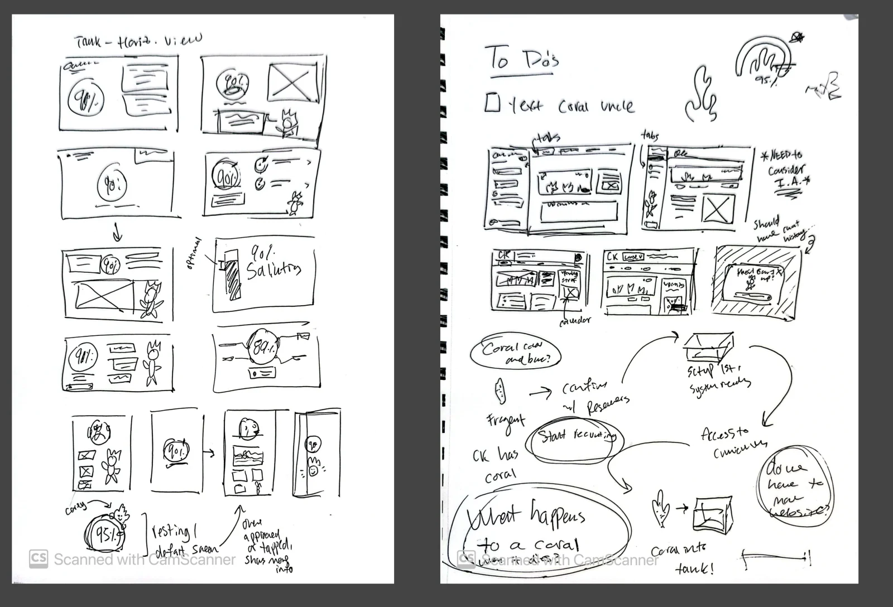
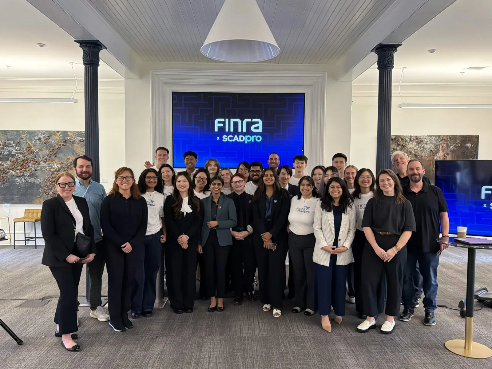
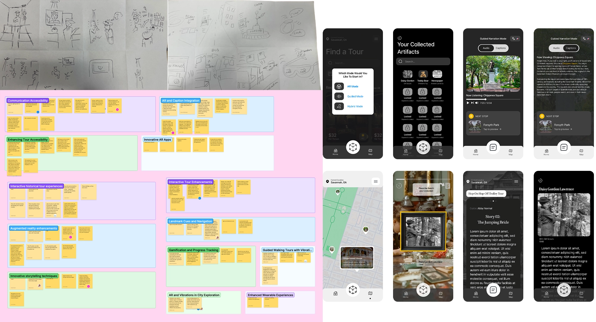
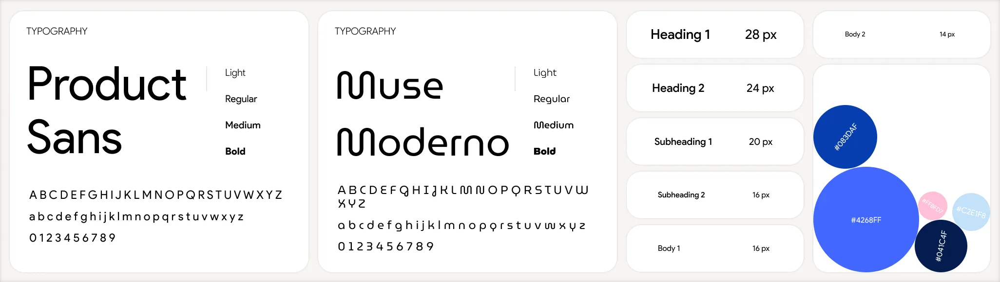
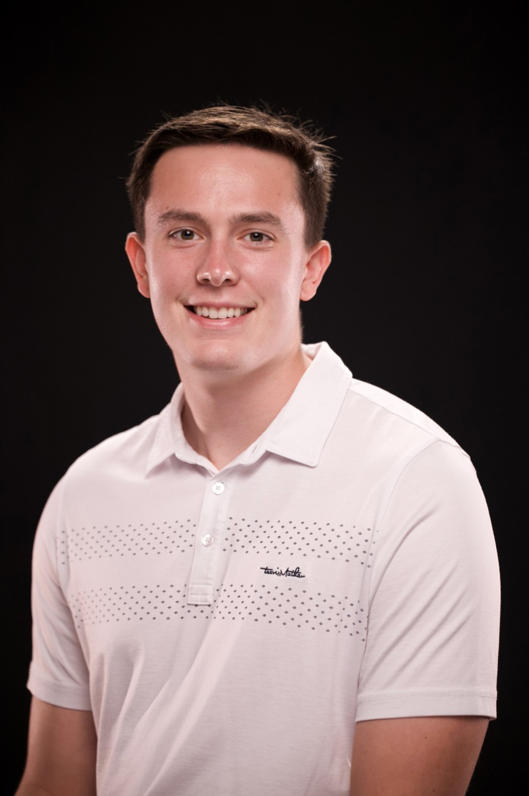

Contio
Brand, website and launch films for an AI meeting platform

I design and build products.
Currently designing at Contio.
Move across any project to see where it started.

Brand, website and launch films for an AI meeting platform


Classroom coral restoration, with an AI that knows the tank


Redesigning FINRA’s ecosystem for role-based experiences


Reimagining Savannah tours with interactive AR storytelling


Balancing independence and oversight in dementia care

I’m a product designer, former college athlete, and Boise native. Driven by a competitive discipline and a natural curiosity for complex systems, I turn messy digital problems into clean, high-performance experiences that people can depend on.